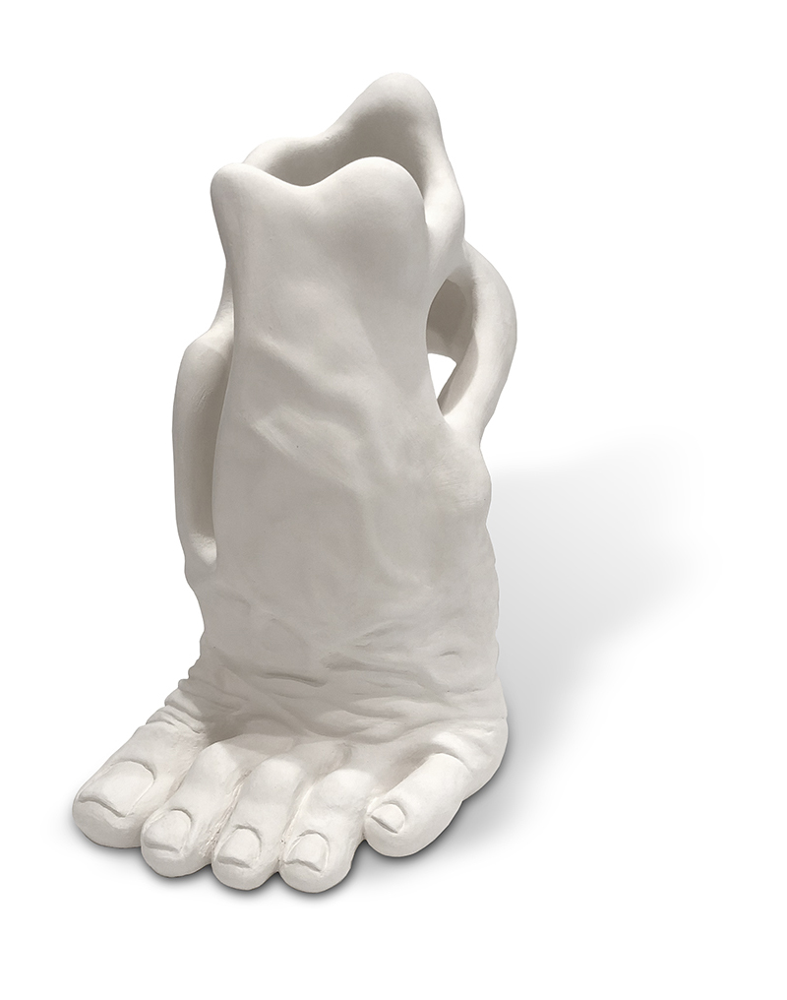

Working on this...
look
After working on this website and trying my best to figure out CSS and the rest of programing that goes with it... this will have to wait. And working on new sculptures like the one on this page '6 Foot Distance' But I do have my resume on my professional graphics website, take a look.
